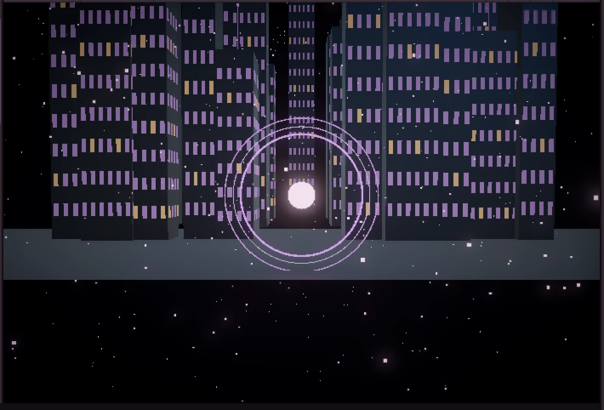
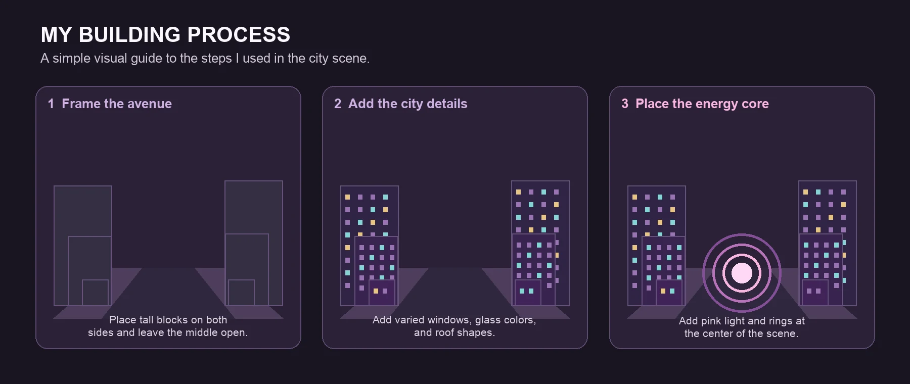
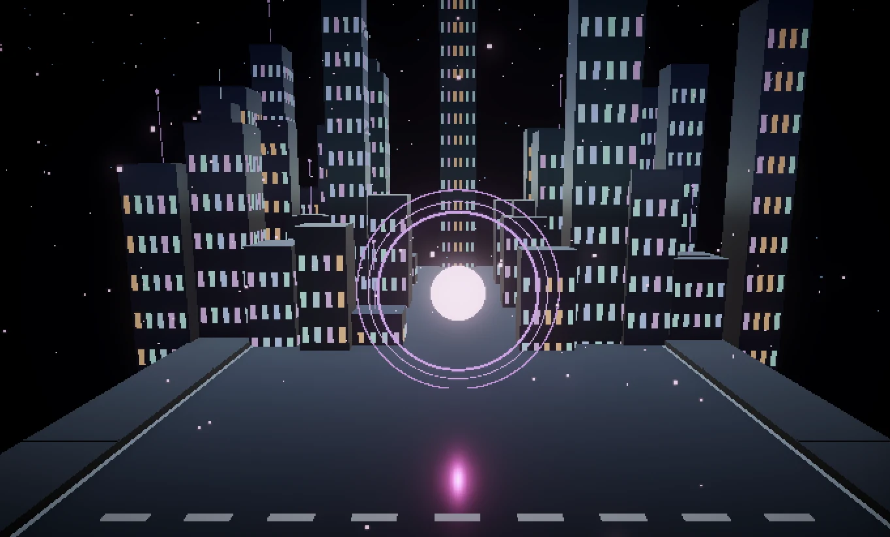
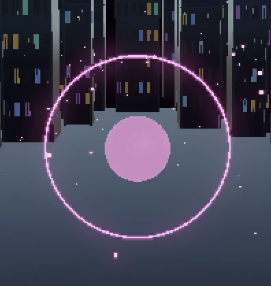
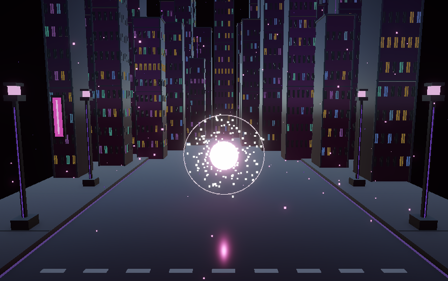
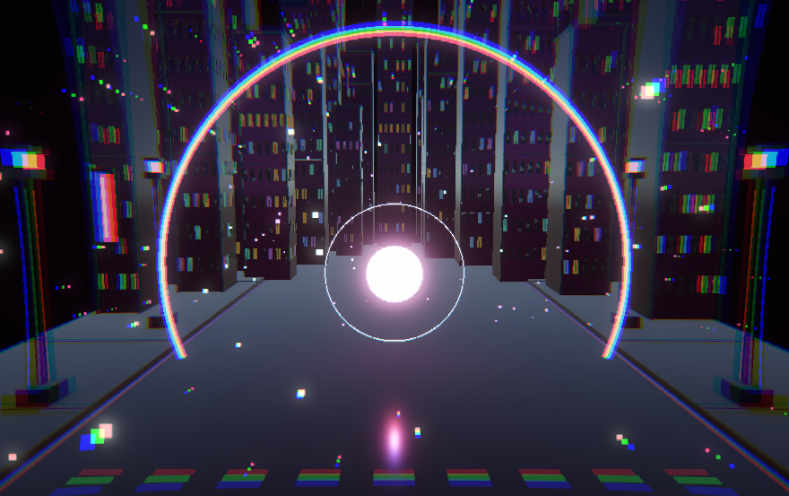
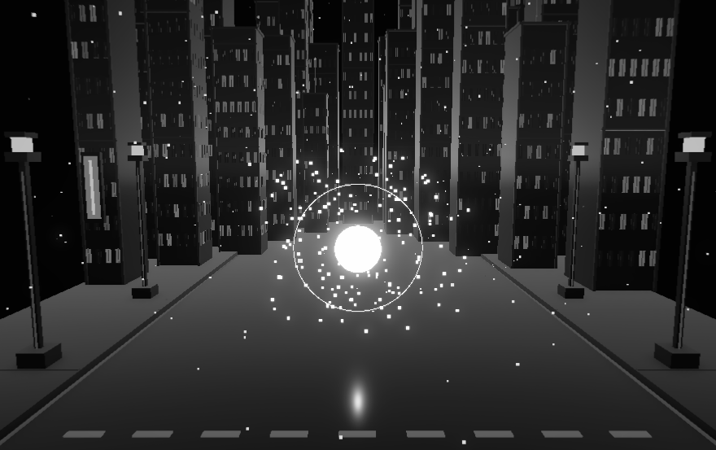
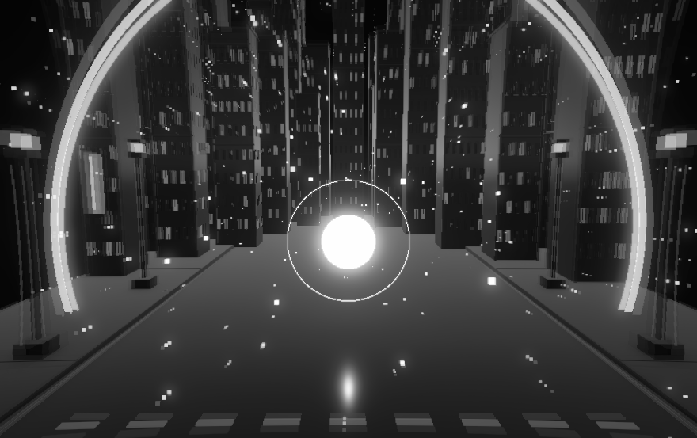
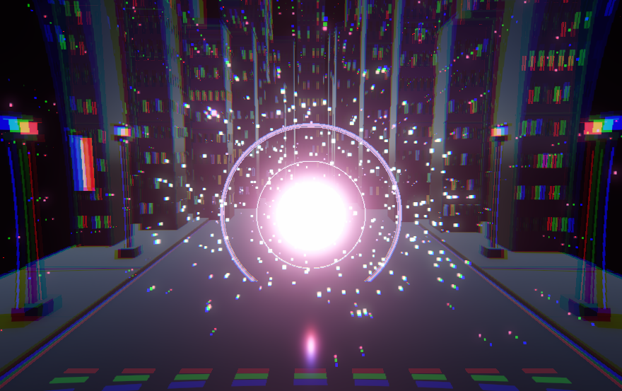
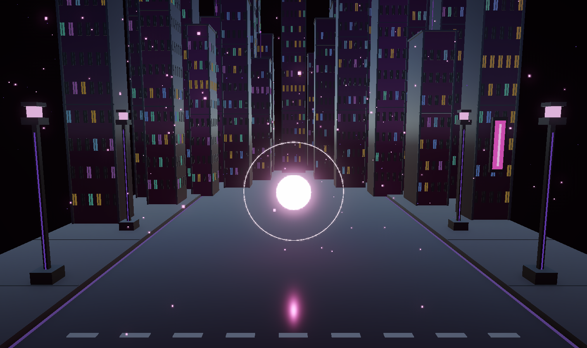

Project 1: Kludging as a Creative Approach
01 / Project idea
I started with the reference video I shared. I liked its bright center, moving rings and the way one action could change the whole scene. I wanted to make that kind of response with my computer keyboard.
I did not want to copy the forest in the video. I changed the setting to a Manhattan inspired night street, with tall buildings, deep purple colors and a pale pink light in the middle. I wanted the light to feel like the energy source for the city.
02 / System diagram
This is how the finished piece works in Unity. The street is the base scene. My keyboard sends an input to the controller script, which changes the rings, colors, particles and light. The image on the right is the piece in the Game view.
On a phone, scroll sideways to see the full diagram.
03 / Making process
First city test
I first put simple buildings around a small light. The street did not fill the frame and the middle felt too weak. This test helped me decide to make the light larger and give the city a clearer shape.

Manhattan inspired buildings
I changed the buildings to different heights and placed them in staggered rows around the open avenue. I also broke up the window colors so each floor was not one solid stripe. Some windows are dark; others have cyan, lilac, blue or a little warm yellow light. I tested a Blender model, but built the final city in Unity because it was easier to adjust each tower and its position there.

Road and color
The ground looked like a large empty black area, so I added a road, sidewalks and a crosswalk. I removed the middle road line where it met the pink reflection. I moved the buildings and road toward dark purple, while leaving the window lights different colors.

The energy core
I tried several versions of the center circle. The flat pink one in this image was not bright enough, so I changed it to a much lighter pink and increased its glow. I kept the permanent ring thin and soft. The brighter center now looks more like the source of the wave.

Glow and focus
I used Bloom to make the pale pink core, ring, windows and street lights glow into the dark scene. I also used a brief RGB color split when the energy moves, so the buildings seem to scatter light. I tried depth of field, but it made everything too blurry, so I turned it off to keep the buildings sharp.

Key 1: the wave moves out
I changed the controls from external buttons to the keyboard. When I press 1, a ring grows from the center and the scene turns black and white as the wave reaches it. I set the ring travel to about 2.3 seconds and the color change to about 1.8 seconds, then tested the timing until the change felt connected to the ring.

The black and white state
When the outward ring has left the screen, the city stays black and white. The street, buildings and their window lights all change, while the glowing center still shows where the wave started.

Key 1 again: color returns
Pressing 1 again pulls the ring back toward the center, and the color returns as it moves inward. I wanted the second press to feel like the same action in reverse, instead of an instant color switch.

Key 4: particle burst
I kept key 4 for the bigger impact. It sends out three rings and a burst of particles, while the center flashes and the RGB split becomes much stronger. I settled on a burst of 360 bright particles and 130 smaller lights, with the main wave lasting about 1.75 seconds. I kept these settings after they gave the scene the impact I wanted.

Finishing the sides
I tested flowering trees to fill the empty sides, but they covered the buildings and did not look right on this street. I removed the trees and petals, then added four street lights and two neon signs. They fill the edges more naturally and also catch the glow and color split when the wave happens.

04 / Project video